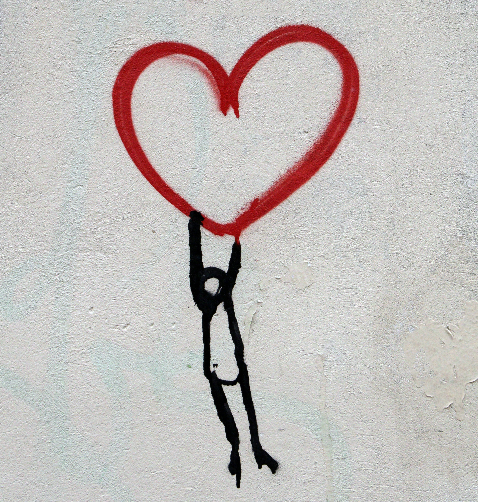
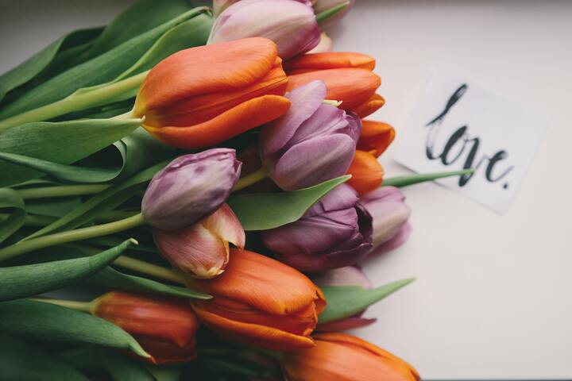

聊聊渣男 | 为什么李笑来这次可能错了

最近看到有人转发李笑来的视频号，题目是《妈妈应该成为女儿的保护神》，内容大致为
作为女生，有一个与之沟通顺畅且阅人无数的妈妈会帮她挡掉渣男。还提到缺乏母爱的女孩一定会被坏男人欺负。所以如果你有一个漂亮女儿，一定要让她相信你，理解你，愿意和你沟通，无话不说，这样能帮她避免踩坑。
母亲的角色当然很重要，有一个身经百战，无话不谈的妈妈多让人羡慕。但在感情的问题上，母亲给的正确建议也容易被忽视，况且女生恋爱时很容易“上脑”，尤其是那些没有恋爱经验的女生，感情用事起来，看见火盆误以为是爱情的圣光，怎么都拦不住的。
即便母女沟通再好，也不能保证女儿会听妈妈的话，尤其在感情上。如果妈妈察觉到异常反对恋情，女儿可能出于逆反更愿相信这是一份来之不易的“真爱”，况且母亲也要尊重界限，不能把自己想法强加给女儿，有的路需要她自己去走。
父亲影响更为重要
不是说妈妈的角色不重要，只是在“预防渣男”上，我认为父亲实则发挥了更重要的作用。
什么的女生会易被骗，我觉得是那些和父亲关系不够好，或者说小时候没有从异性 (父亲) 那得到足够疼爱和关注的，一般这类女生自我认同感不高，容易相信渣男的甜言蜜语，即使母亲强烈劝阻，也很容易被感动，轻易陷入一段恋情。

没有被父亲真正疼爱过的姑娘很容易上钩。如果女孩和父亲关系很好，有深层次的有效沟通，那她和其他异性的关系也会有很大改善。
母亲的必要角色
那母亲什么时候重要甚至是必要呢？
母亲一般都在感情结束后需要疗伤时最重要。这时候妈妈像是医生，用最本能的爱抚慰支持女儿，帮她恢复元气。

扯远一点，为什么有的人更容易掉入渣男渣女的陷阱，有可能因为他们太“好”了，好到“圣母”的地步 (“圣母”的造就往往也和原生家庭有关)，他们喜欢并沉浸在解救别人的苦难中，不断满足他人需求来获得存在感，却经常碰到不感恩的渣男渣女，新闻里圣母渣男也经常成对出现。
总之，我认为在女生择偶这件事上，往往是她和父亲之间潜移默化的关系更会影响她的选择，而不是和母亲的沟通。
从多年前的《把时间当朋友》、《托福核心词汇》开始，我就是李笑来老师的学生，现在是他践行群成员，也是他写作课的学员。此篇纯属练习，也算是对他观点的一个补充。
公众号[Della在路上]